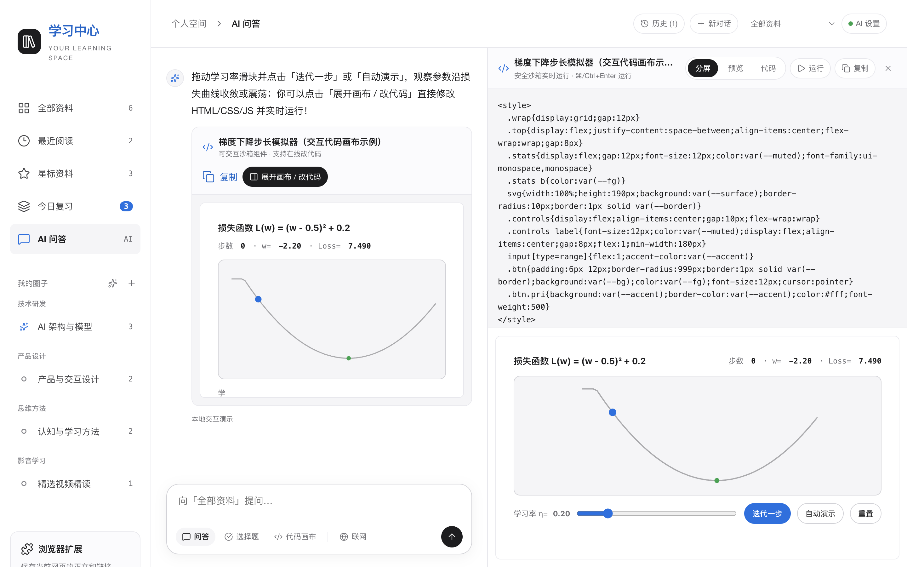
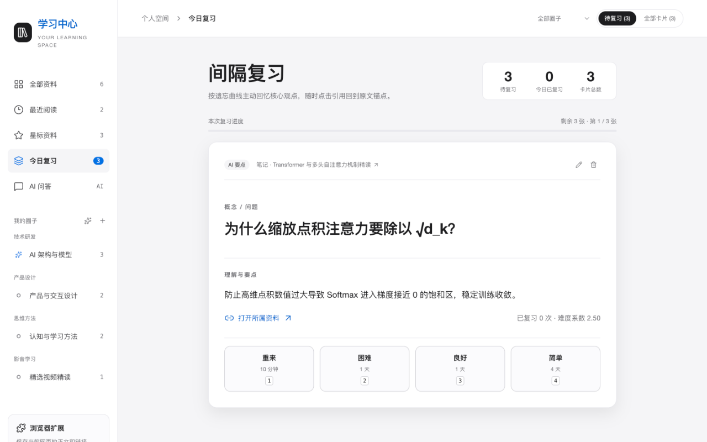

阅读页右侧 AI 伴读侧栏
打开任意文章、PDF、笔记或视频，按 ⌘. 即可在右侧停靠展开伴读侧栏。上下文自动绑定当前资料，支持对话、出题、画布与联网切换；点击引用直接原地滚动高亮原文段落，并可将回答一键记入本篇笔记。
本地优先的个人知识库与 AI 伴读工作台。将网页、YouTube/B 站视频、PDF 与笔记沉淀在你自己的电脑里，结合 AI 伴读侧栏、结构化分析、交互代码画布与间隔复习，完整消化每一篇内容。
curl -fsSL https://raw.githubusercontent.com/tyyt53909-create/learning-center/main/scripts/install.sh | bash




把浏览器剪藏、沉浸式阅读、伴读问答、交互实验与间隔复习打通在同一个本地工作空间里。
打开任意文章、PDF、笔记或视频，按 ⌘. 即可在右侧停靠展开伴读侧栏。上下文自动绑定当前资料，支持对话、出题、画布与联网切换；点击引用直接原地滚动高亮原文段落，并可将回答一键记入本篇笔记。
一键提取网页正文、仅剪藏划词选中内容或自动识别 YouTube / B 站视频。内置本机自动化安装向导：点击按钮自动打开 Chrome 扩展页并定位插件文件夹，拖入即装；同时提供免安装的书签栏方案。
不只是聊天框。在问答页或伴读侧栏随时切换「选择题」即时判分并将错题转闪卡，或用「代码画布」生成自包含 HTML/CSS/JS 交互演示，在严格沙箱内实时编辑运行。
内嵌 PostgreSQL + pgvector 实现语义向量与关键词混合检索，回答严格执行逐字子串防幻觉校验。遇到需要外部补充的问题时，一键开启「联网」融合实时网页结果（默认免密钥 DuckDuckGo，可选 Tavily / Brave / Serper / SearXNG），网页来源可直接一键收藏入库。
不再让收藏夹吃灰。每一份进入学习中心的资料都会经过解析、分析与回忆强化。
支持网页链接、YouTube/B 站视频、PDF（提取文本与原件双模式）、Markdown 笔记、本地视频与图片。YouTube 支持纯 Node 免 yt-dlp 直连抓取字幕与简介；圈子支持分类分组，以及关键词、域名、类型与向量相似度自动归类。
自动提取正文与字幕锚点单文件最高支持 512 MB规则 + AI 推荐 + 语义相似度后台自动提炼「主要讲了什么 · 核心摘要」与编号核心要点。无字幕视频自动结合元数据与联网给出辅助分析（粘贴文稿后可升级为逐字精析），图片支持多模态视觉读图。随时拉开右侧伴读侧栏追问细节。
3 句主旨 + 3–8 个结构化重点点击引用直接跳回原文或视频秒数手动粘贴文稿或联网辅助解读将 AI 提炼要点、个人思考笔记或随堂测验错题一键转为复习闪卡，也可让 AI 基于原文深度出题。复习台内置 SM-2 算法，用 Space 翻面、1–4 评分，按科学间隔巩固长期记忆。
要点制卡 / AI 深度制卡 / 错题转卡Space 翻卡 · 1–4 快捷评分每张卡片保留原资料锚点链接无论你是在啃论文、看技术视频，还是沉淀跨领域案例灵感，学习中心都能让资料持续产生复利。
集中收藏 arXiv 论文 PDF、框架文档、GitHub 讨论与 YouTube 技术讲座，随时跨资料对比架构权衡。
告别“收藏即学会”的错觉，用主动测验与间隔重复把看过的内容真正内化为长期记忆。
随时剪藏竞品分析、行业报告、长视频观点与截图，沉淀可复用、可导出的个人素材库。
无需配置外部数据库、无需 Docker。只需 Node.js 24.15+ 或 26+，一分钟即可启动完整服务。
# 自动检测 Node 24+、拉取仓库、安装依赖、构建并启动服务
curl -fsSL https://raw.githubusercontent.com/tyyt53909-create/learning-center/main/scripts/install.sh | bash
默认安装至 ~/learning-center 并自动监听 http://127.0.0.1:3000。如需自定义路径或仅安装不启动，可在命令前附加 INSTALL_DIR=~/my-lc AUTO_START=0。
# 适用于 macOS / Windows / Linux 全平台
git clone https://github.com/tyyt53909-create/learning-center.git
cd learning-center
npm ci
npm start
npm start 会自动构建 Web 前端与 Chrome 插件（输出至 dist/），随后启动本地服务。后续更新只需在目录中执行 git pull && npm start。
# 1. 启动服务后打开 http://127.0.0.1:3000 # 2. 点击左下角「了解浏览器扩展」→「一键打开 Chrome 扩展页并定位插件」 # 3. 开启 Chrome 右上角「开发者模式」，将弹出的 extension 文件夹拖入页面即可 npm run build # 仅重新生成 dist/extension
如果不想安装扩展，也可以在「了解浏览器扩展」弹窗底部，直接把「收藏到学习中心」书签拖到任意浏览器书签栏使用。
面向个人长期积累的极简工程设计，无云端绑定、无供应商锁定。
内置 PostgreSQL 与向量扩展，零运维开箱即用；也支持通过 DATABASE_URL 接入独立 PostgreSQL 实例。
支持 OpenAI、DeepSeek、通义千问、硅基流动与本地 Ollama；配置在 Web 端热更新，无需重启。
所有原文件、数据库与 API Key 仅存放在本地 .data/；非 loopback 监听强制要求 ACCESS_TOKEN。
单篇资料与 AI 对话随时一键导出标准 Markdown（含摘要、逐字引用、笔记与原文），拒绝数据囚笼。
关于运行环境、模型配置、视频解析与隐私边界的简明解答。
项目完全开源免费，本地运行无需任何订阅。AI 功能兼容所有 OpenAI 接口协议，你可以自由选择 OpenAI、DeepSeek、通义千问、硅基流动 或 本地 Ollama；不填 API Key 也能完整使用收藏、阅读、笔记、检索、手动闪卡复习以及内置的互动测验与代码画布示例。
完全可以。项目内置了嵌入式 PGlite（含 pgvector 向量扩展），只需本机有 Node.js 24.15+ 或 26+，运行安装命令后即可直接启动，无需单独安装或运维任何数据库服务。
可以。对于带字幕（含自动字幕）的 YouTube 视频，服务端免 yt-dlp 自动抓取带时间戳的完整字幕；对于源站未开启字幕的视频，系统会自动拉取标题、频道与简介并结合联网信息生成结构化辅助分析，同时也支持你在阅读页一键「粘贴字幕/文稿」升级为逐字时间戳精析。
不会。所有原文件、数据库记录、个人笔记与在界面中填写的 API Key 都仅保存在你本机目录的 .data/ 中，且默认仅监听 127.0.0.1。除你主动向所配置的 AI 模型或联网搜索引擎发起的请求外，应用不会向任何第三方回传数据。
不会覆盖数据。因为 .data/ 已在 .gitignore 中隔离，后续只需在安装目录重新运行 git pull && npm ci && npm start（或再次运行一键安装脚本）即可平滑升级，原有资料、笔记与复习进度全部保留。